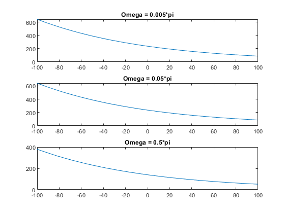

Problem #0.16
By: Ian Doarn Class: EECE 3203
T=1; Ts=T/100; tmin=0; tmax=1; N=tmax/Ts; n=-N:N; omega1 = 0.005*pi; omega2 = 0.05*pi; omega3 = 0.5*pi; figure(); subplot(3, 1, 1); syms m1 yn1 = exp(-(n*Ts)); f1 = cos(omega1*m1*Ts)*exp(m1*Ts); V1 = subs(f1, m1, n); plot(n, yn1*sum(V1)); title('Omega = 0.005*pi') subplot(3, 1, 2); syms m2 yn2 = exp(-(n*Ts)); f2 = cos(omega2*m2*Ts)*exp(m2*Ts); V2 = subs(f2, m2, n); plot(n, yn2*sum(V2)); title('Omega = 0.05*pi') subplot(3, 1, 3); syms m3 yn3 = exp(-(n*Ts)); f3 = cos(omega3*m3*Ts)*exp(m3*Ts); V3 = subs(f3, m3, n); plot(n, yn3*sum(V3)); title('Omega = 0.5*pi') % figure(2); % a = 1:0; % b = [Ts*cos(omega1) -(Ts-1)]; % y = filter(b, a, V1); % plot(n, y); syms y(t) x(t) x(t) = cos(0.5*t) ode = x(t) == diff(y, t) + y(t) sol = dsolve(ode)
x(t) = cos(t/2) ode(t) = cos(t/2) == diff(y(t), t) + y(t) sol = (2*5^(1/2)*cos(t/2 - atan(1/2)))/5 + C1*exp(-t)